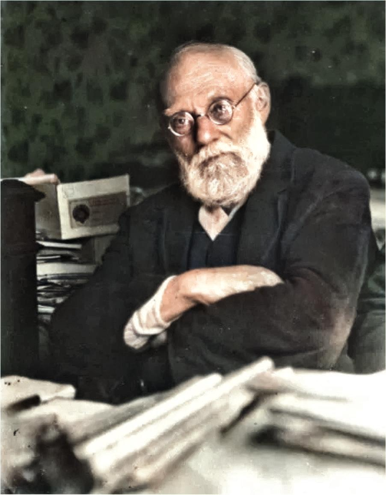

À propos
L’Otletosphère est une cartographie relationnelle des personnalités et institutions liées à Paul Otlet. Ce projet part du constat de l'implication forte de Paul Otlet, au sein des organisations internationales pour la paix ainsi qu'au sein des institutions bibliographiques et documentaires. Les différentes activités d'Otlet lui ont permis de côtoyer un large nombre de personnalités scientifiques et d'artistes avec lesquels il a pu entretenir des correspondances, se lier d'amitié, ou collaborer sur des projets communs. Ces relations sont connues ou attestées par l'examen des archives du Mundaneum.
L'Otletosphère est une réalisation en cours de fabrication par Clément Borel, Jean David, Olivier Le Deuff et Arthur Perret (Université Bordeaux Montaigne) dans le cadre du projet HyperOtlet.
Liens
- Carnet de recherche : https://hyperotlet.hypotheses.org/
- Compte Twitter : https://twitter.com/hyperotlet
- Frise chronologique interactive sur Paul Otlet : http://hyperotlet.huma-num.fr/timeline.html